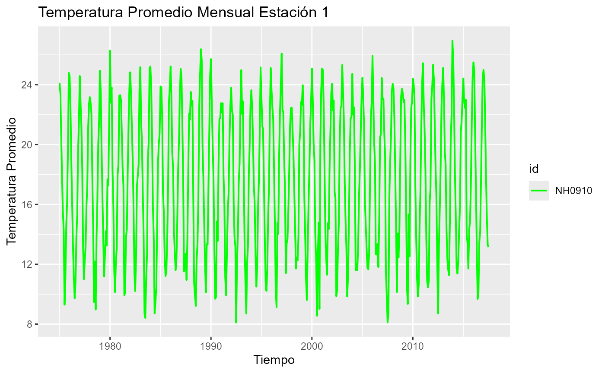
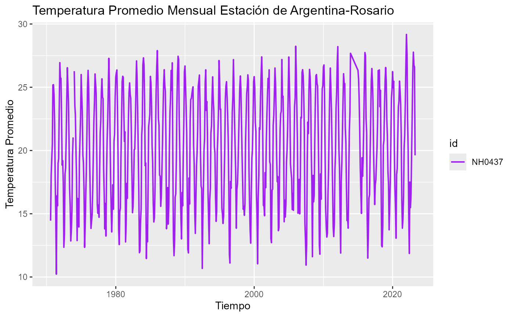

El paquete paquetemeteorologico proporciona herramientas
para la lectura,manipulacion y visualizacion de los datos de estaciones
meteorológicas. En esta introducción, exploraremos algunas de las
funcionalidades basicas del paquete.
El paquete incluye funciones para descargar y leer datos de
estaciones meteorológicas A continuación, se muestra un ejemplo de cómo
descargar y leer datos meteorológicos utilizando la función
leer_estaciones().
# Ejemplo de cómo descargar y leer datos de una estación
estacion_1 <- leer_estaciones("NH0437", "../datos/NH0437.csv")
estacion_2 <- leer_estaciones("NH0910", "../datos/NH0910.csv")El paquete también ofrece funciones para resumir datos
meteorológicos. A continuación, se muestra un ejemplo de como crear un
resumen de la temperatura promedio mensual utilizando la función
tabla_resumen_temperatura().
# Crear un resumen de la temperatura promedio mensual para las estaciones leidas
tabla_resumen_temperatura(estacion_1)
#> # A tibble: 1 × 5
#> id Max Min Promedio Desvio_Estandar
#> <chr> <dbl> <dbl> <dbl> <dbl>
#> 1 NH0910 35.2 0 17.7 6.12El paquete también ofrece funciones para visualizar datos
meteorológicos. A continuación, se muestra un ejemplo de como graficar
la temperatura mensual utilizando la función
graficar_temperatura_mensual().
# Graficar la temperatura mensual de una estacion específica
graficar_temperatura_mensual(estacion_1,c("green", "blue", "red","yellow","purple"),"Temperatura Promedio Mensual Estación 1")
graficar_temperatura_mensual(estacion_2,c("purple", "pink", "lightblue","orange","brown"),"Temperatura Promedio Mensual Estación de Argentina-Rosario")